Quality infrastructure,built from Chiba.
良質な社会資本を、千葉から。
News
Strengths
恵進コンサルの
3つの強み
恵進コンサルは、千葉の総合建設コンサルタントとして、
設計・測量・補償を、ひとつの会社で担ってきました。
計画から用地、そして完成後の登記まで。
切れ目のない対応で、発注者にとっての
「最適な成果」を届けることに向き合い続けます。
計画から登記まで、一社で担う設計・測量・補償の
一貫対応
千葉で積み重ねてきた45年地域との密着力
14種の資格を持つ技術者集団が生む技術と総合力
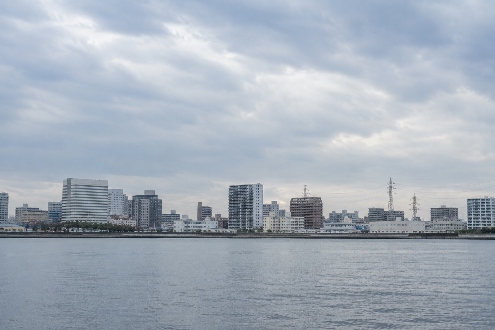
仮会社紹介
設計・測量・補償を一社で担う、
千葉市の総合建設コンサルタント「恵進コンサル」のご紹介
Projects
国・千葉県・千葉市をはじめとする発注者のもとで、設計・測量・補償の業務を積み重ねてきました。その一部をご紹介します
01
設計千葉市下水道実施設計業務委託
（浜野雨水16-1）H16.12｜元請下水道実施設計業務委託（浜野雨水）
02
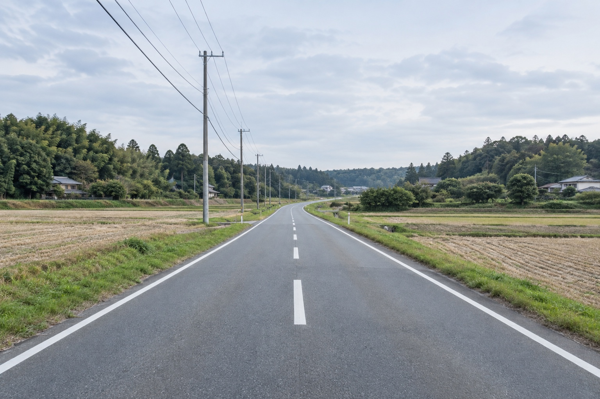
設計四街道市山梨臼井線
道路予備設計委託H15.2｜元請山梨臼井線 道路予備設計委託
03
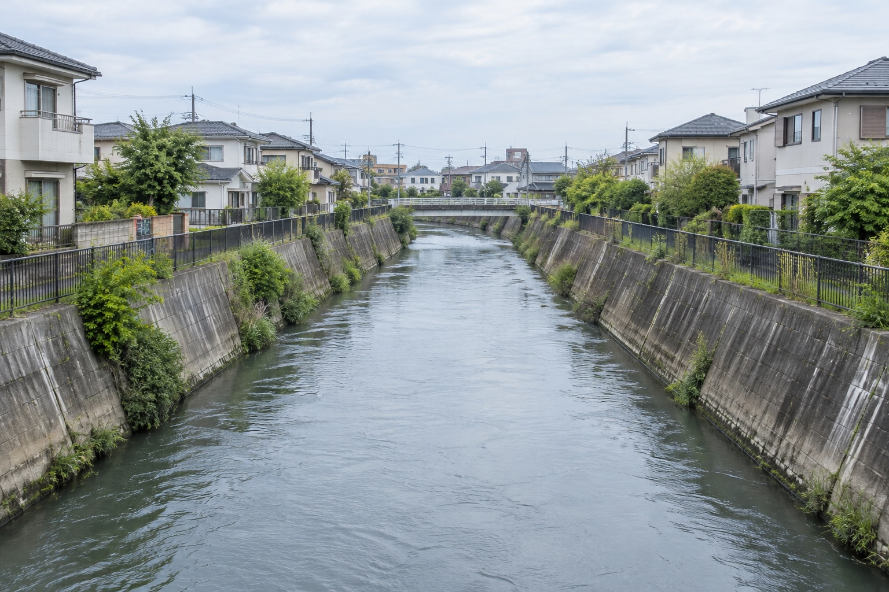
設計千葉土木事務所県単緊急都市河川対策委託
（構造物設計）H15.9｜元請県単緊急都市河川対策委託（構造物設計）
04
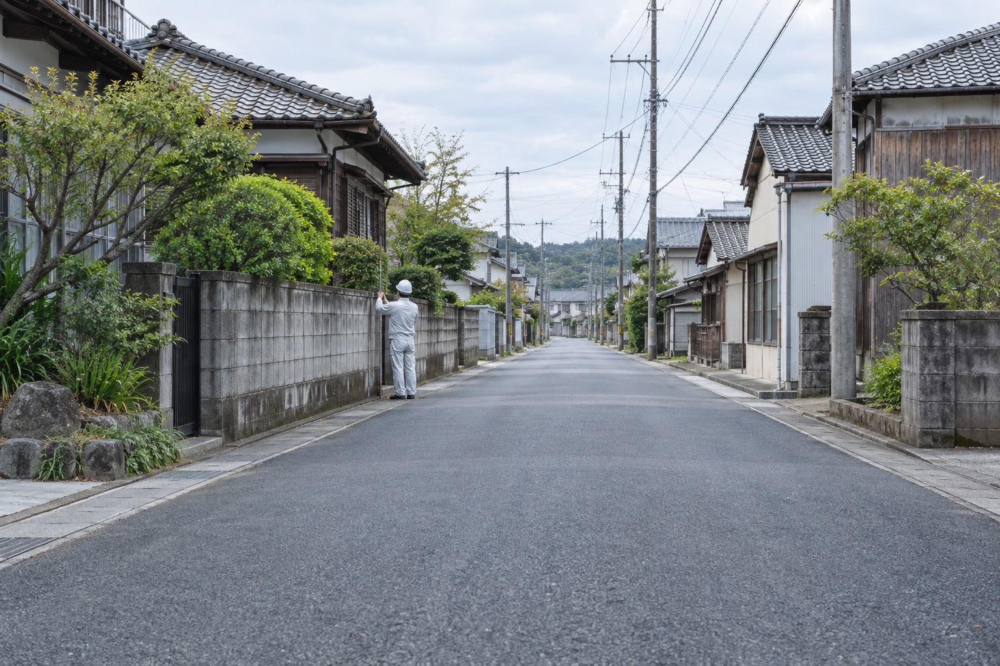
補償市原市都市計画道路青柳海保線
補償物件調査業務委託H12.5｜元請都市計画道路青柳海保線 補償物件調査
05
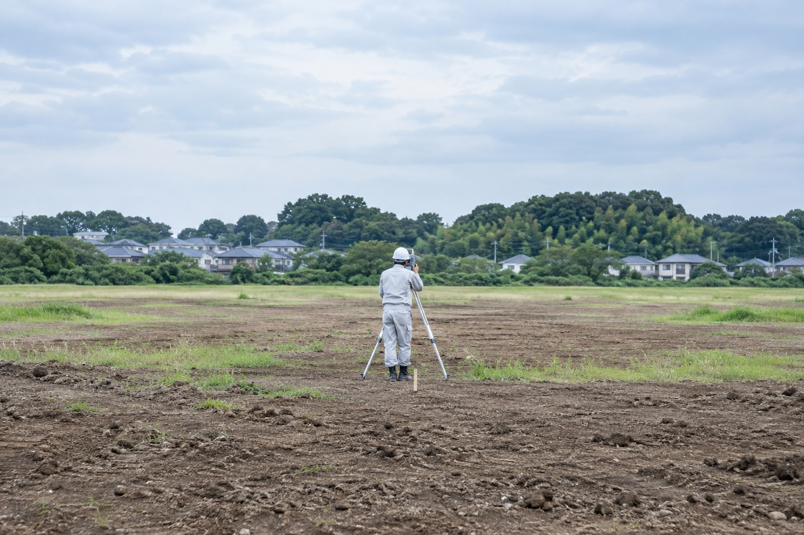
測量千葉市平和公園拡張建設事業
用地測量業務委託年度確認中｜元請平和公園拡張建設事業 用地測量
06
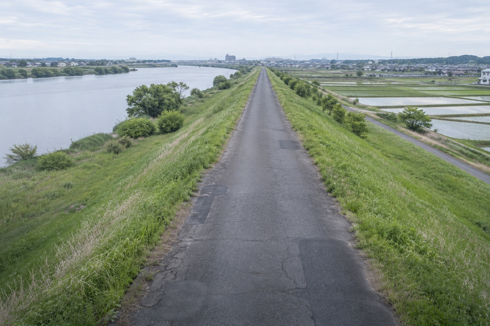
設計国土交通省
利根川下流工事事務所神崎管理用道路
補修工事設計業務H15.1｜下請神崎管理用道路 補修工事設計業務
07
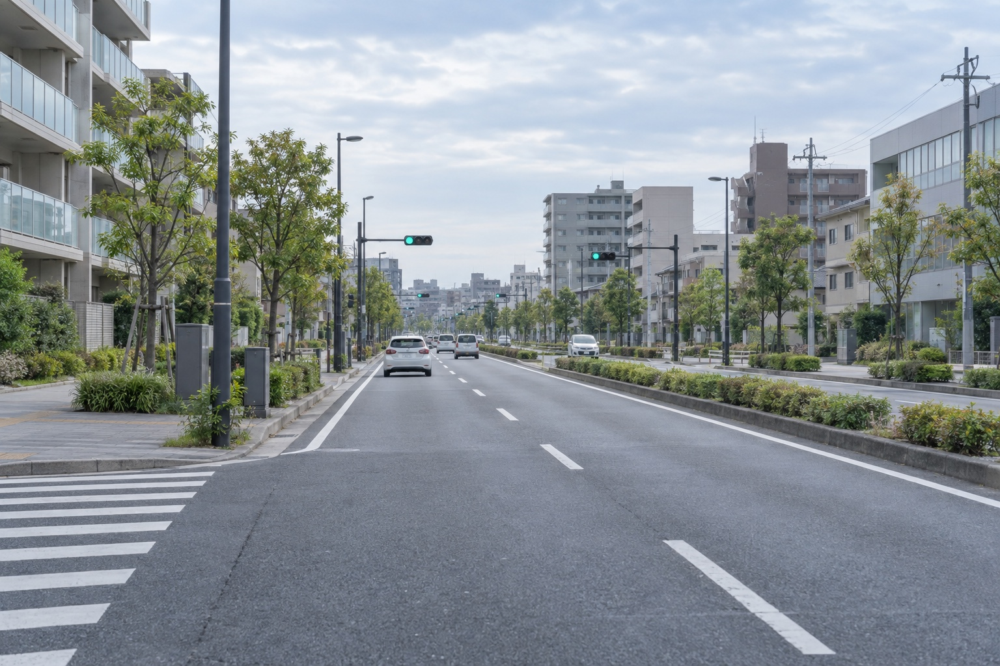
設計千葉市幕張本郷146号線他1
道路実施設計業務委託H15.11｜元請幕張本郷146号線他1 道路実施設計
- 1
CIVIL DESIGN
土木設計
計画を、図面のかたちにする。
道路、河川、橋梁、上下水道、宅地造成、鋼構造・コンクリート構造物。千葉市と近隣市町の公共事業を中心に、予備設計から実施設計までを担います。測量・地質調査・補償の結果を同じ社内で受け取れるため、前提条件のずれが少なく、手戻りの少ない設計ができます。
建設コンサルタント登録 建07-6992｜技術士2名・RCCM 2名
→ 詳しく見る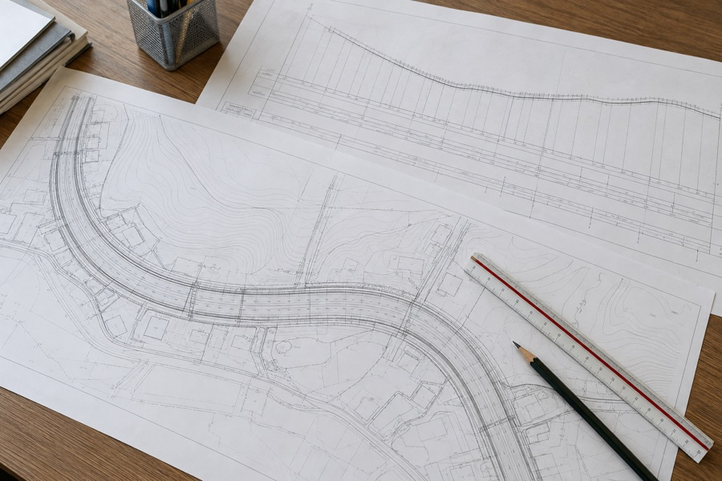
仮 - 2
SURVEYING
測量
事業の土台となる、確かな数値を。
地形測量、用地測量、路線測量、地積測量、基準点測量。測量士7名・測量士補2名が、現場で確かめた数値を次の設計と用地の手続きへつなぎます。公共事業の出発点として、精度と記録の確かさを最優先にしています。
測量業者登録 (8)-17023｜測量士7名・測量士補2名
→ 詳しく見る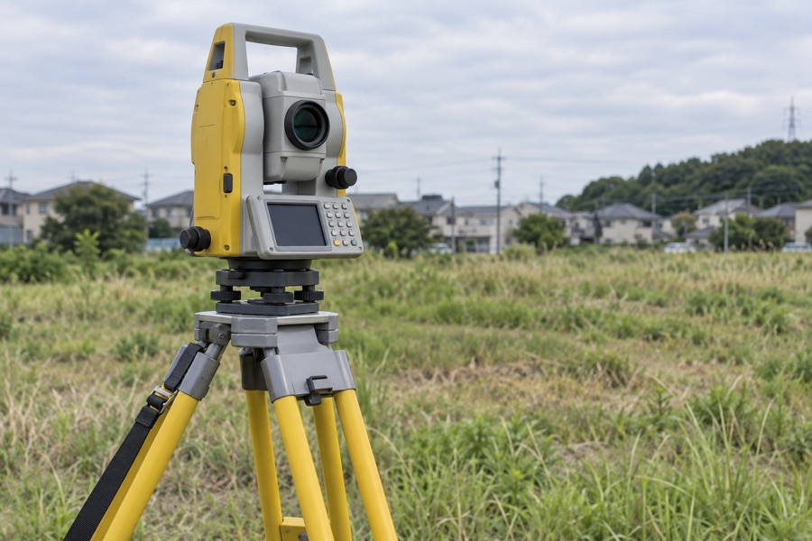
仮 - 3
COMPENSATION
補償コンサルタント
公共事業と、沿道の暮らしをつなぐ。
事業損失、物件調査、復旧積算。家屋の事前・事後調査、建物や工作物の算定など、公共事業に伴う補償の調査と算定を担います。丁寧な説明と正確な記録で、発注者と地域の方々の双方に向き合います。
補償コンサルタント登録 補05第3499
→ 詳しく見る仮 - 4
GEOTECHNICAL & SURVEY
地質調査・調査業務
設計の前提を、現場で確かめる。
機械ボーリング、原位置試験などの地質調査に加え、交通量調査、下水管渠調査などの現況調査を行います。地盤と現況のデータを社内の設計へ直接渡せることが、調査から設計まで一社で担う強みです。
設計部門と同じ社内で、調査結果をそのまま設計へ
→ 詳しく見る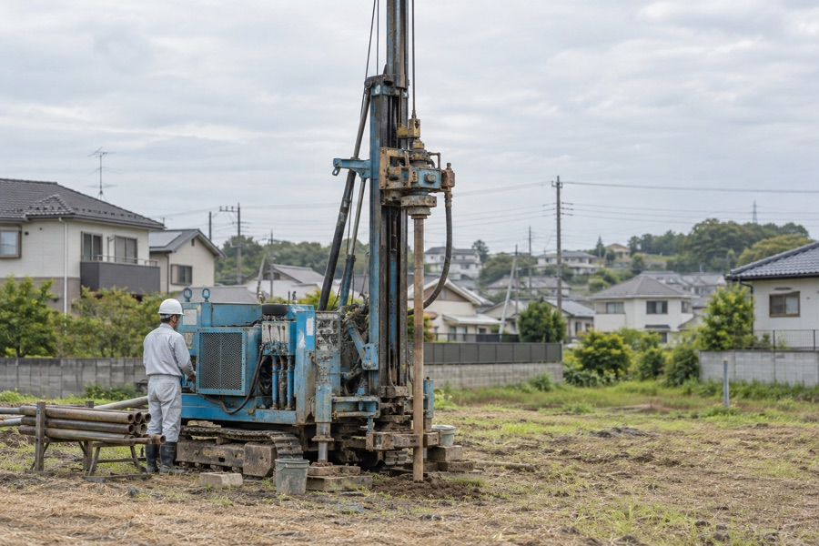
仮 - 5
PERMITS & GIS
許認可申請・地図情報
手続きと情報整備で、事業を前に進める。
開発許認可申請書の作成をはじめ、各種事業の許認可申請を支援します。あわせて、地図情報システムの開発、デジタル地図の入力、各種台帳システムの作成など、自治体の情報整備を担います。
設計・測量と並行して進めることで、手続きの待ち時間を短縮
→ 詳しく見る仮 - 6
ARCHITECTURE & REGISTRATION
建築設計・施工監理・登記
完成後の登記まで、一社で。
一般建築・公共建築の設計と、土木・建築・廃棄物処理施設の施工監理を行います。併設の土地家屋調査士事務所が、土地の分筆・合筆、建物の表示登記までを担い、事業の最後の手続きまで切れ目なく対応します。
土地家屋調査士事務所 千葉第2201｜一級土木施工管理技士2名
→ 詳しく見る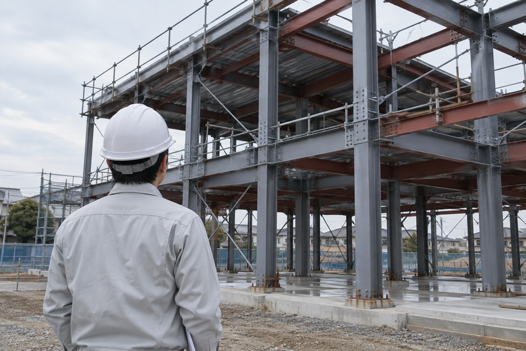
仮
Our Approach
技術の確かさと、人への誠実さ。その両方で、発注者に応えてきました。
( 01 ) Strengths
「誠意・工夫・正確」を
貫く技術的パートナー発注者の立場で課題を整理し、工夫のある解決策を、正確な成果品で返す。創業以来変わらない、仕事の基準です。
仮( 02 ) Strengths
登録4部門を、
ひとつの窓口で建設コンサルタント・補償コンサルタント・測量業・土地家屋調査士事務所。発注の手続きも、打ち合わせの相手も、ひとつで済みます。
仮( 03 ) Strengths
現場で確かめてから、
設計する機械ボーリング、交通量調査、下水管渠調査。設計の前提となる地盤と現況を自社で測り、机上の想定で終わらせません。
仮( 04 ) Strengths
用地と補償を、
住民の目線で家屋調査や補償の算定は、丁寧な説明と正確な記録で。公共事業と地域の方々のあいだに立つ仕事です。
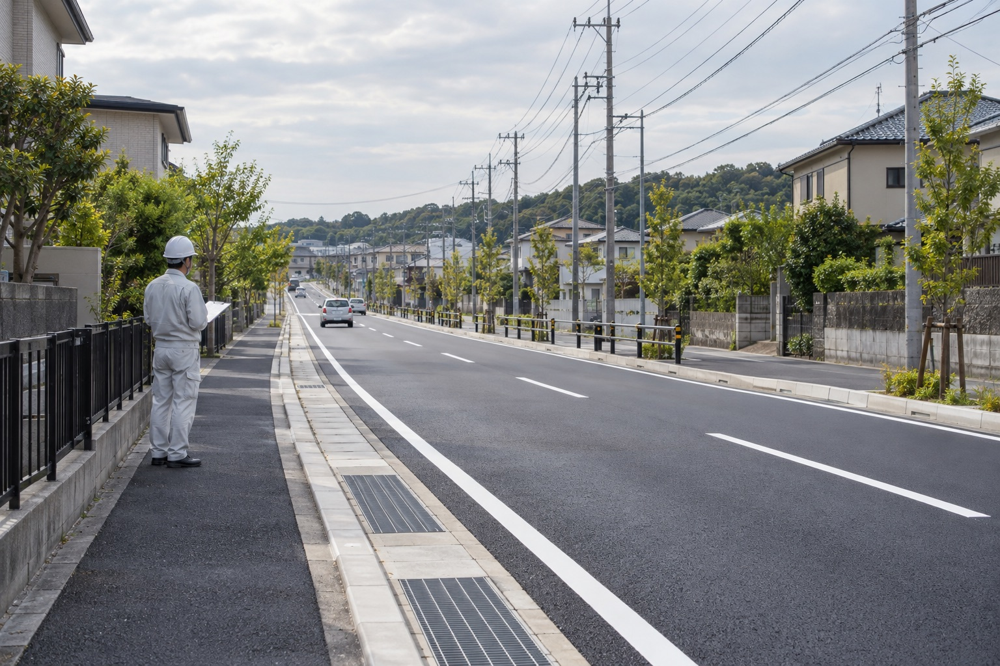
仮( 05 ) Strengths
海外プロジェクトへの
参画経験JICA（国際協力事業団）のタンザニア上水道整備調査測量、ルーマニア最終処分場設計に参画。千葉で培った技術を、海外でも。
仮( 06 ) Strengths
現場に近い、
千葉市中央区の拠点矢作町の本社から、千葉市内・近隣市町の現場へ。発注者の声に、すぐ応えられる距離です。
仮( 01 ) Strengths
「誠意・工夫・正確」を
貫く技術的パートナー発注者の立場で課題を整理し、工夫のある解決策を、正確な成果品で返す。創業以来変わらない、仕事の基準です。
仮( 02 ) Strengths
登録4部門を、
ひとつの窓口で建設コンサルタント・補償コンサルタント・測量業・土地家屋調査士事務所。発注の手続きも、打ち合わせの相手も、ひとつで済みます。
仮( 03 ) Strengths
現場で確かめてから、
設計する機械ボーリング、交通量調査、下水管渠調査。設計の前提となる地盤と現況を自社で測り、机上の想定で終わらせません。
仮( 04 ) Strengths
用地と補償を、
住民の目線で家屋調査や補償の算定は、丁寧な説明と正確な記録で。公共事業と地域の方々のあいだに立つ仕事です。
仮( 05 ) Strengths
海外プロジェクトへの
参画経験JICA（国際協力事業団）のタンザニア上水道整備調査測量、ルーマニア最終処分場設計に参画。千葉で培った技術を、海外でも。
仮( 06 ) Strengths
現場に近い、
千葉市中央区の拠点矢作町の本社から、千葉市内・近隣市町の現場へ。発注者の声に、すぐ応えられる距離です。
仮
Recruit
恵進コンサルで、
千葉のまちの基盤を、
一緒につくりませんか？
測量技師・設計技師・補償コンサルタント・営業担当。
計画から登記まで一社で担う現場で、技術を磨きながら、
千葉の暮らしを支える仕事に携わります。
本社（千葉市中央区矢作町）勤務、週休2日・退職金制度あり。
※現在の募集状況は確認中です。
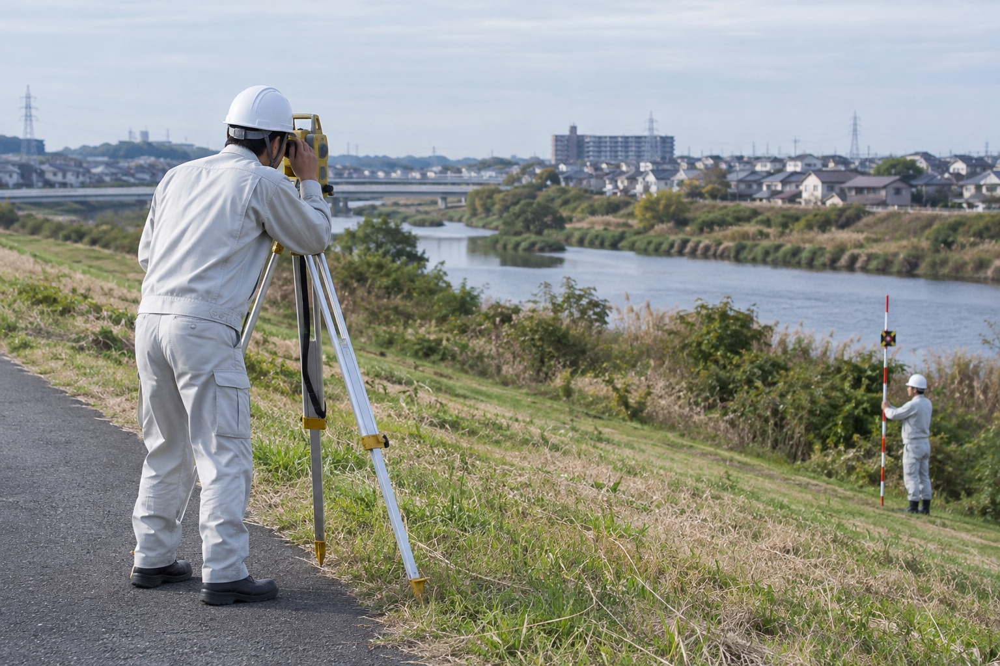
- 4募集職種
測量・設計・補償・営業 - 千葉市本社勤務
中央区矢作町 - 週休2日退職金制度あり